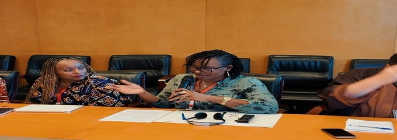
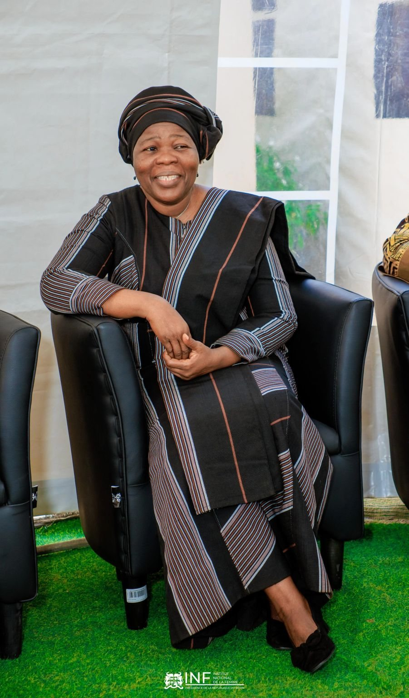
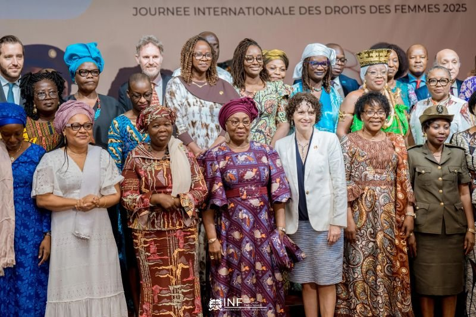
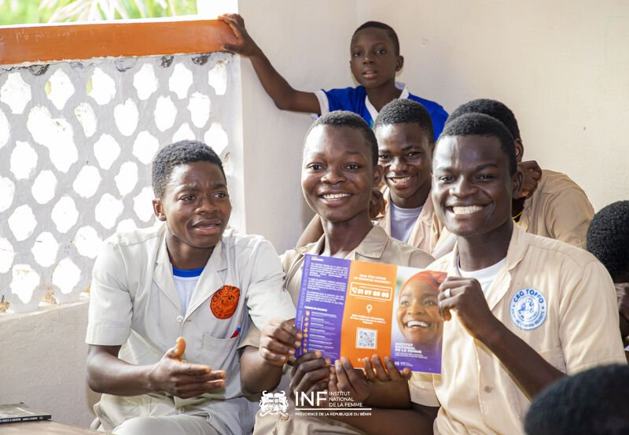
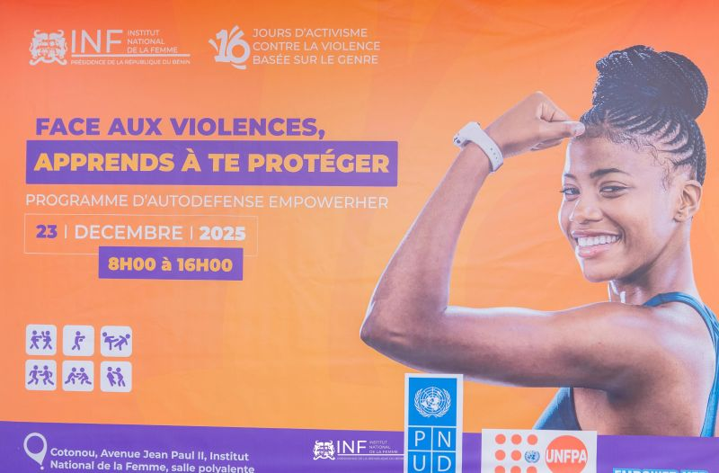
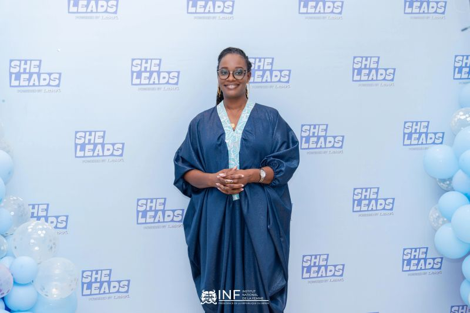
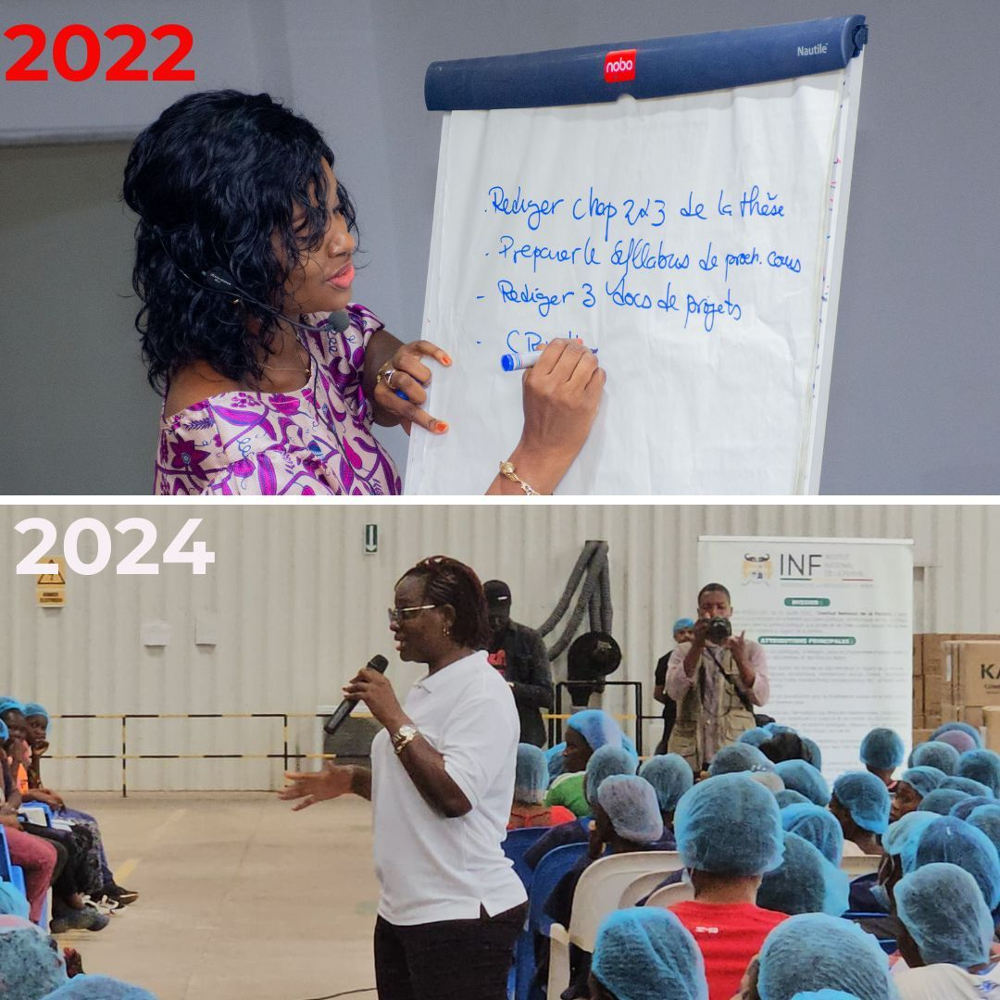

Tribunes & Déclarations d'Impact

L’économie des soins est avant tout une question de pouvoir
Panel « L’Avenir Féministe du Soin » : travail domestique non rémunéré, répartition du temps, politiques publiques et justice sociale.
Vivre la solidarité féminine de façon concrète
Flore Djinou, speaker officielle à l'Hôtel Azalaï, partage sa vision d'une sororité agissante au service du développement durable.

Inauguration du Nouveau Siège de l'INF
Un sanctuaire moderne et un call center 114 gratuit pour l'assistance, l'écoute et l'autonomisation des femmes et des filles.

Les progrès majeurs réalisés par l'INF au Bénin
Justice renforcée, assistance gratuite, soutien psychologique et médical : les 9 avancées concrètes obtenues pour les droits des femmes.
La place des femmes dans l’espace numérique
Opportunités d'émancipation, lutte contre le cyberharcèlement et impératif de protection juridique pour un cyberespace sûr et digne.
Le digital, levier d'émancipation économique
Intervention lors du Pitch des entrepreneures panafricaines : comment le numérique permet aux femmes de rêver plus grand et de briller.

Sensibilisation contre le harcèlement en milieu scolaire
Plus de 3 000 élèves filles et 720 enseignants sensibilisés dans 24 collèges publics du Bénin : zéro tolérance pour les violences.

Self-défense & Libération de la parole
Au-delà de la technique physique, la reconnexion à son corps, à sa valeur et la solidarité entre femmes contre les violences basées sur le genre.

Authenticité, vulnérabilité & bien-être
Une soirée consacrée au développement personnel, à la créativité, à la santé mentale et à l'impact entrepreneurial des femmes.

« Es-tu fière de toi ? » : L'heure du bilan
Faire le point sur ses résolutions, vaincre la procrastination et s'offrir la fierté d'avoir accompli ses objectifs.

« Qui l’aurait cru ? » : Un chemin de foi et d'impact
De coach de plus de 500 assistantes d'élite à Secrétaire Exécutive de l'INF : un engagement fidèle pour la cause des femmes.